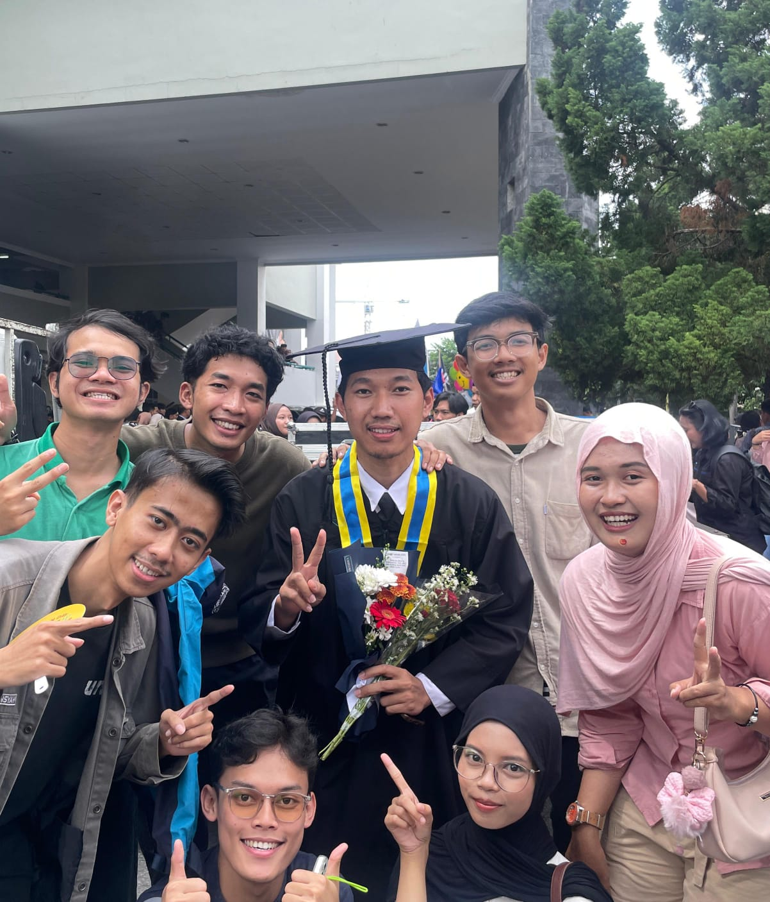

sigit khoirul anam
science, research, technology

Biography
Hi👋! I'm Sigit Khoirul Anam, currently a research assistant at Nanoplasmonics
Technology Research Group: Photonics Research Center - Badan Riset dan Inovasi Nasional. I
am actively involved in several
research projects.
I have a strong interdisciplinary background in fields such as chemistry, physics, and computer
science 🧪⚛️💻.
I am particularly fascinated by the interaction between matter-light, and
I am passionate about developing methods to control, monitor, and analyze these interactions
in silico (computational) or and in vitro (laboratory) through advanced
instrumentation technologies ⚙️.
Links to social media where I am active can be found on this homepage. Disclaimer: This is a
personal website which does not necessarily reflect the opinion of the institution I am
affiliated with.


My research is or has been financed by


Future Research
Further research will focus on functional materials with desired optical properties for
spectrophotometer applications.
Present Research
Nanoparticles and Plasmonics | Battery Optical Sensing | Chemical Reactor Conditions Controller |
UV-Visible Spectrum Analysis
Past Research
Genetic Algorithm-Based Optimization Spectrum Analysis | Spectrometer Fabrication and Development |
Laser-Induced Surface Vibration Fourier Transform | Image Processing Spectroscopy | Compact
Spectroscopy |
Gamma Spectrometry Method Validation | Artificial Intelligence in Spectroscopy | Automatization
Virtual Screening, Pharmacokinetic Prediction, Molecular Docking and Dynamics Approaches in
the
Search for Selective and Potent Natural Molecular Inhibitors of MAO-B for the Treatment of
Neurodegenerative Diseases
Indonesian Journal of Chemistry and Environment (2023) Universitas Negeri Yogyakarta
Suwardi
,
Agus Salim, Joanda Ario Yudha Mahendra, Daniel Bima Aji Wijayanto,
Nurul Azqiya Rochiman,
Sigit Khoirul Anam
, and Nur Hikmah
Pyplasmonics: Python-based GUI for Real-time Spectroscopy Peak Analysis
SoftwareX (Manuscripting progress) Elsevier
Sigit Khoirul Anam,
Suwardi,
Ferry Anggoro Ardy Nugroho,
Iwan Darmadi
Low Cost Spectroscopy with Artificial Neural Networks for Pharmaceutical Compounds
Identification
Sigit Khoirul Anam, Eliana Diah Puspita Arum, Khoirunnisa Puspa Negari, Fauzi Wijaya,
Cahyorini Kusumawardani
Gamma Spectrometry Method Validation Uranium-235 CRM
Indonesian Journal of Chemical Analysis (Manuscripting progress) Universitas Islam Indonesia
Sigit Khoirul Anam, Jasmi Budi Utami, Siswanti,
Regina Tutik Padmaningrum
Biography
Hi👋! I'm Sigit Khoirul Anam, currently a research assistant at Nanoplasmonics Technology Research Group: Photonics Research Center - Badan Riset dan Inovasi Nasional. I am actively involved in several research projects.
I have a strong interdisciplinary background in fields such as chemistry, physics, and computer science 🧪⚛️💻. I am particularly fascinated by the interaction between matter-light, and I am passionate about developing methods to control, monitor, and analyze these interactions in silico (computational) or and in vitro (laboratory) through advanced instrumentation technologies ⚙️.
Links to social media where I am active can be found on this homepage. Disclaimer: This is a personal website which does not necessarily reflect the opinion of the institution I am affiliated with.
My research is or has been financed by
Future Research
Further research will focus on functional materials with desired optical properties for spectrophotometer applications.
Present Research
Nanoparticles and Plasmonics | Battery Optical Sensing | Chemical Reactor Conditions Controller | UV-Visible Spectrum Analysis
Past Research
Genetic Algorithm-Based Optimization Spectrum Analysis | Spectrometer Fabrication and Development | Laser-Induced Surface Vibration Fourier Transform | Image Processing Spectroscopy | Compact Spectroscopy | Gamma Spectrometry Method Validation | Artificial Intelligence in Spectroscopy | Automatization
Virtual Screening, Pharmacokinetic Prediction, Molecular Docking and Dynamics Approaches in the Search for Selective and Potent Natural Molecular Inhibitors of MAO-B for the Treatment of Neurodegenerative Diseases
Indonesian Journal of Chemistry and Environment (2023) Universitas Negeri Yogyakarta
Suwardi , Agus Salim, Joanda Ario Yudha Mahendra, Daniel Bima Aji Wijayanto, Nurul Azqiya Rochiman, Sigit Khoirul Anam , and Nur Hikmah
Pyplasmonics: Python-based GUI for Real-time Spectroscopy Peak Analysis
SoftwareX (Manuscripting progress) Elsevier
Sigit Khoirul Anam, Suwardi, Ferry Anggoro Ardy Nugroho, Iwan Darmadi
Low Cost Spectroscopy with Artificial Neural Networks for Pharmaceutical Compounds Identification
Sigit Khoirul Anam, Eliana Diah Puspita Arum, Khoirunnisa Puspa Negari, Fauzi Wijaya, Cahyorini Kusumawardani
Gamma Spectrometry Method Validation Uranium-235 CRM
Indonesian Journal of Chemical Analysis (Manuscripting progress) Universitas Islam Indonesia
Sigit Khoirul Anam, Jasmi Budi Utami, Siswanti, Regina Tutik Padmaningrum